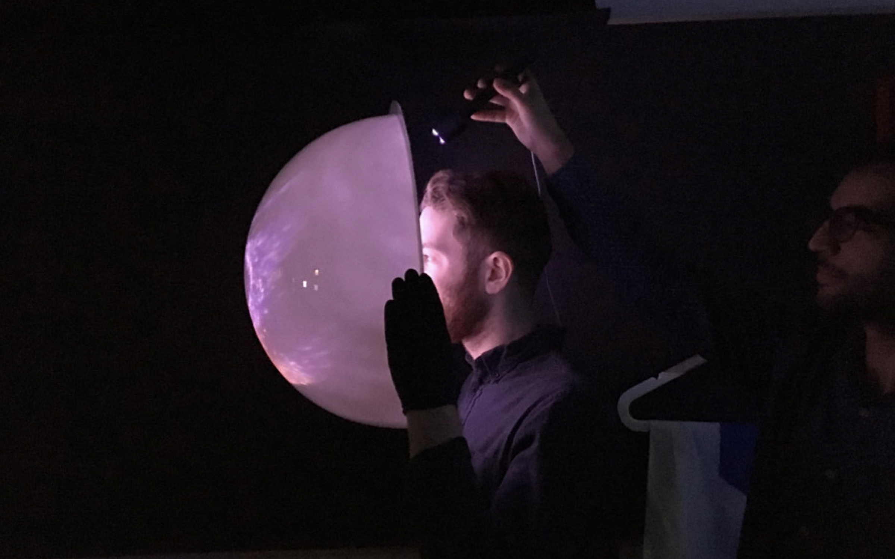

L U C Y Y I P
DESIGN | TECH | MATERIAL | WILDCARD
COSMOS
In collaboration with McCann NY and FrameStore, Tomorrow Lab, where I worked in between my college and graduate studies, designed and built a wearable cinematic experience to promote the launch of the new National Geographic television series "One Strange Rock", directed by Darren Aronofsky and hosted by Will Smith (with contribution from NASA). The show details the experiences of past and present astronauts and how these events changed their lives and their perspective of their home planet.
Team at Tomorrow Lab:
Pepin-Gelardi, Theodore Ullrich, Shelby Thompson, Ben Oppenheimer, Tan Tran, Jingwen Zhu, Dorian Fernandez, Joe Saavedra, Josephine Latreille
The helmets take design cues from a real astronaut helmet, including a lower body harness and articulating visor. In order to re-create an astronaut’s view of Earth from space, the visor itself is actually a projection screen, specially textured and painted to allow content to be seen on the interior and exterior surfaces.
The dome is big enough to allow a user to look around inside without feeling claustrophobic, but not so big that it creates a ridiculous experience when wearing it. Minimal branding touchpoints were added including the National Geographic logo.
All the electronics are bundled into a self-contained, removable, rechargeable module, allowing units to be easily maintained, recharged, and swapped when needed. The electronics module contains a Raspberry Pi with Bluetooth audio connection to embedded stereo audio speakers, creating a portable high-fidelity sound experience.
A single button with built-in LED indicator sits on top of the electronics module, to indicate both the state of the video playback, as well as control the video. A dedicated WiFi Router allows for connection to the helmets with zero setup, and a quiet onboard fan keeps the units cool.
The battery-powered laser projector is capable of generating wide field-of-view images without visual distortion thanks to custom engineered fish-eye optic lenses and proprietary projection mapping techniques. We selected the Sony brand 720p HD laser projector due to its battery power option and balance between brightness, resolution, and physical size. The projector units are Internet-connected through WiFi, allowing a group of helmets to play synchronized video.
For a special screening premier of the series "One Strange Rock", we rapidly fabricated 25 units using 3D printed MJF parts. The visors were cast in tinted urethane. The Harnesses were formed on a 80 year-old British thermoforming rig. Each helmet was hand-assembled in Tomorrow Lab's fabrication shop in Chinatown.
please see below for the advertisement video of the helmets.